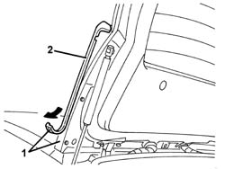
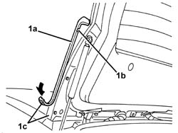

7055A17 REAR SPOILER SEAL (one), left or right, - R.R.
- Path
- Procedures > 70 FITTINGS > 7055 MOULDING AND PROTECTION > 7055A exterior mouldings > 7055A17 REAR SPOILER SEAL (one), left or right, - R.R.
- Kind
- repair procedure (removal / refitting; the operation number is the code)
- Applies to
- all engines; all production periods
- Interactive page
- https://sloeber94.github.io/elrnDB-a156/en/#/3238947
Applies to: all engines; all production periods; only with equipment: Station Wagon
 Removing
Removing
 Refitting
RefittingOpen the tailgate.
1. Remove the adhesive tape securing the spoiler side seal.
2. Recover the seal.

Applies to: all engines; all production periods; only with equipment: Station Wagon
Refitting
RemovingCheck that seal is undamaged.
Clean the area of the spoiler where the adhesive is to be applied and degrease with heptane.
1. Position seal (1a), using groove (1b) as a positioning reference, and stick down adhesive tape (1c).

Applies to: all engines; all production periods; only with equipment: Station Wagon
Close the tailgate.